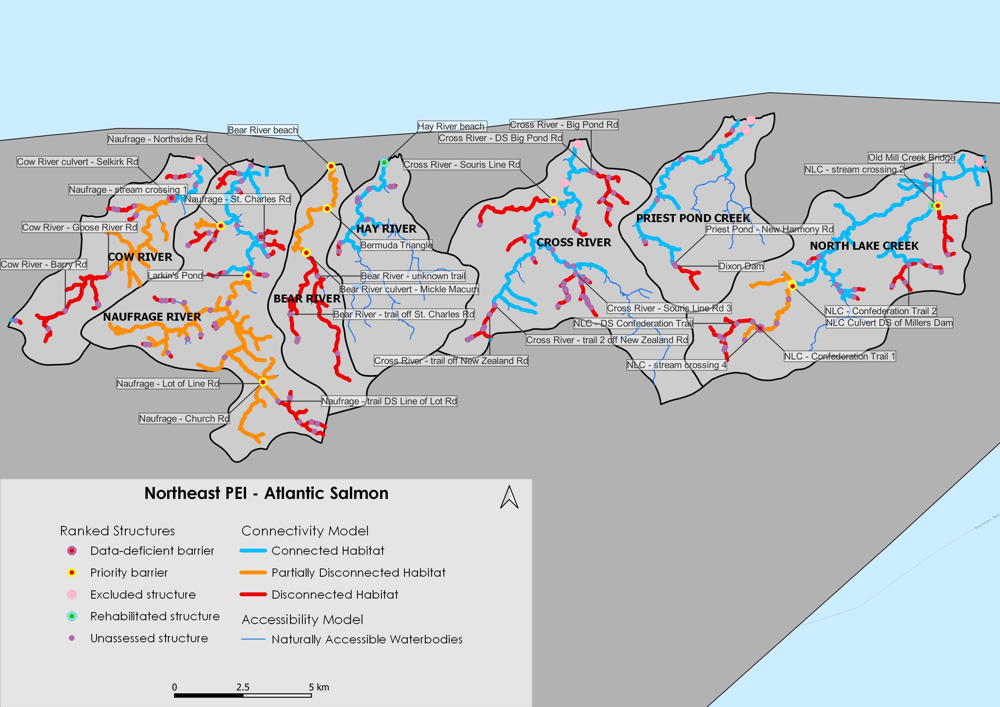
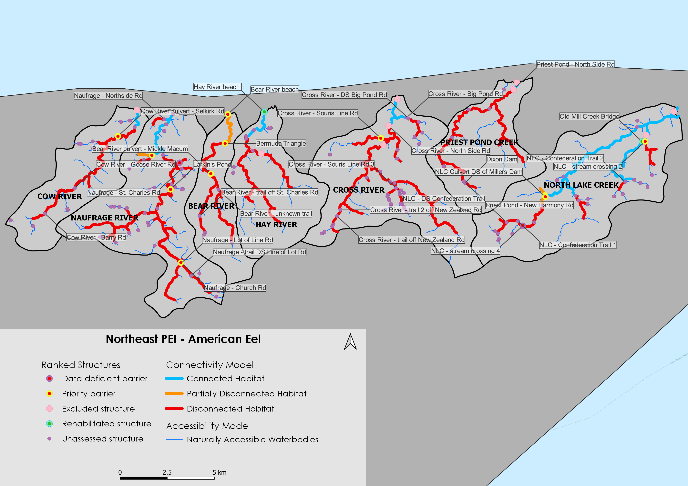
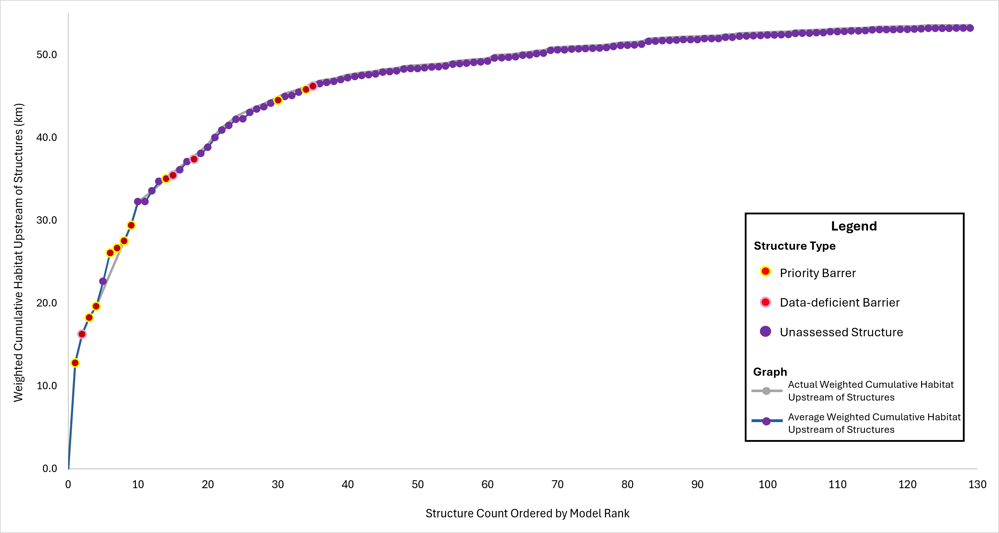
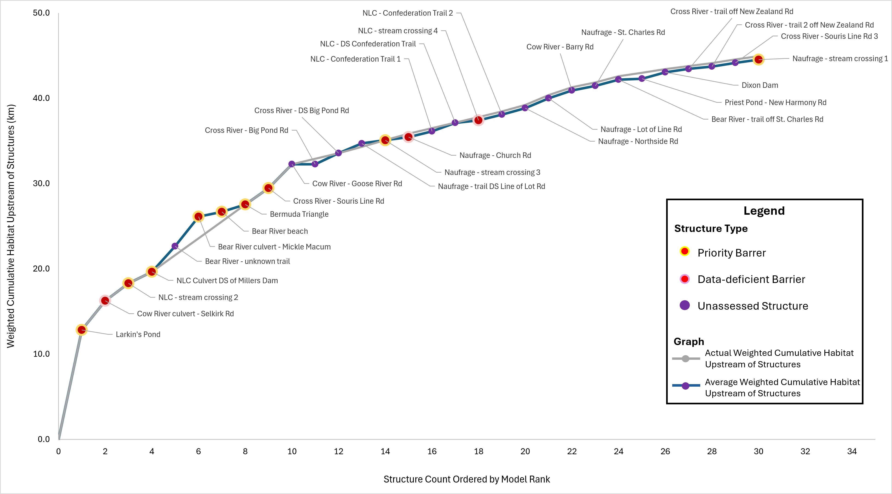
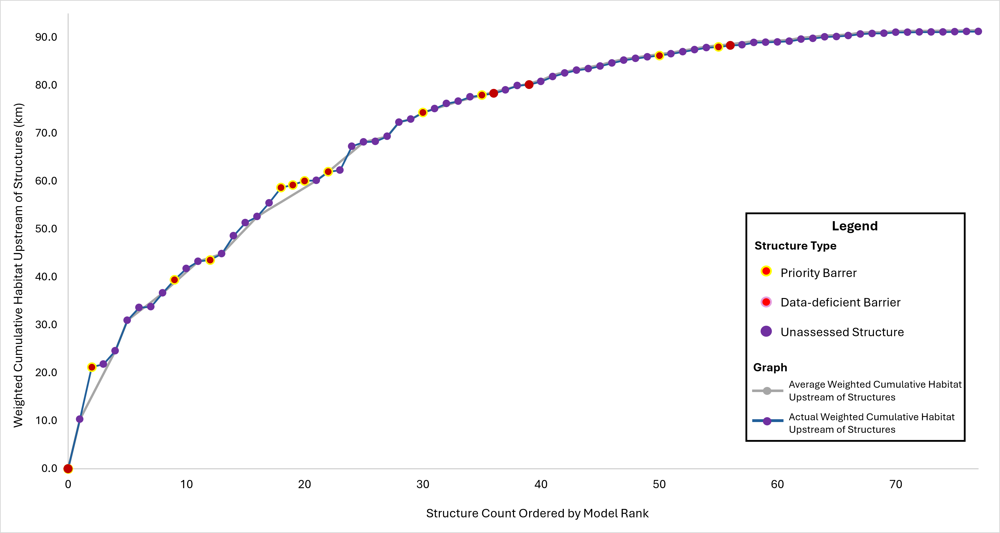
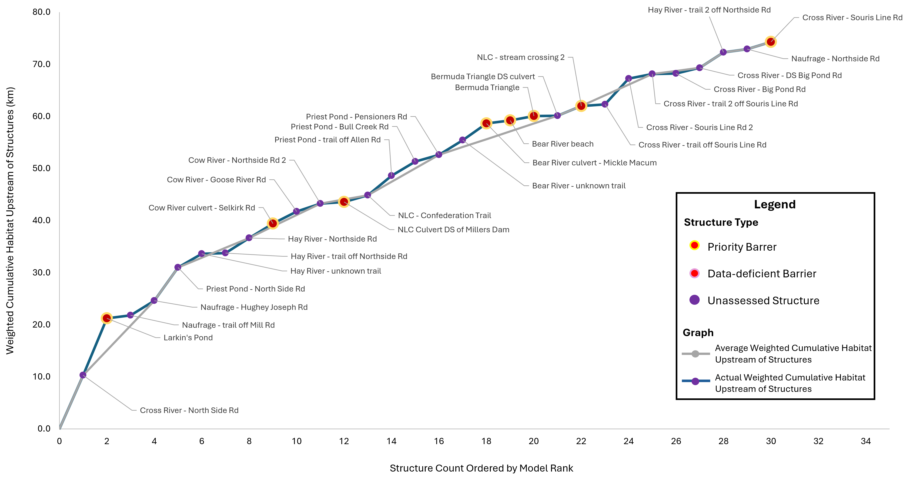

Barrier ID | Site Name | Watershed | Structure Status | Actual Weighted Gain Per Barrier | Average Weighted Gain Per Barrier | Structure Count Order by Model Rank |
|---|---|---|---|---|---|---|
87aefbb4-6d49-44d7-91ba-65f7447b13f5 | Larkin's Pond | Naufrage River | Priority barrier | 12.81 | 12.81 | 1 |
0ffc5176-38c5-4ba6-8d90-4c58afd93025 | Cow River culvert - Selkirk Rd | Cow River | Data-deficient barrier | 3.43 | 3.43 | 2 |
870159b1-13f3-4b0c-8822-8f8a3e602be5 | NLC - stream crossing 2 | North Lake Creek | Priority barrier | 2.04 | 2.04 | 3 |
58516e7c-4461-4730-9c00-dd3bd40ea830 | NLC Culvert DS of Millers Dam | North Lake Creek | Priority barrier | 1.35 | 1.35 | 4 |
f2493a98-0972-4bcc-8b22-aa160d4f499a | Bear River - unknown trail | Bear River | Unassessed | 3.01 | 1.97 | 5 |
41e9d2e6-5336-4e92-a4a1-179548a7c4ff | Bear River culvert - Mickle Macum | Bear River | Priority barrier | 3.46 | 1.97 | 5 |
02e35677-fc78-4d5e-9793-dfd0622bc7a2 | Bear River beach | Bear River | Priority barrier | 0.57 | 1.97 | 5 |
59f2c06b-e33f-4a36-910b-3aa5226f575f | Bermuda Triangle | Bear River | Priority barrier | 0.85 | 1.97 | 5 |
a1822ead-01a4-4c4f-acdc-f2a0f8542ee1 | Cross River - Souris Line Rd | Cross River | Priority barrier | 1.91 | 1.91 | 6 |
bb794469-512f-4292-90ac-6ed41b0bf44d | Cow River - Goose River Rd | Cow River | Unassessed | 2.81 | 2.81 | 7 |
3b3d63a5-cfd9-4335-bc64-e7fad5accb13 | Cross River - Big Pond Rd | Cross River | Unassessed | 0.00 | 0.65 | 8 |
ec316daa-0c45-4a81-af5e-aaeca8698e71 | Cross River - DS Big Pond Rd | Cross River | Unassessed | 1.30 | 0.65 | 8 |
5aae28f8-b6f0-4689-9fb1-5660049ae180 | Naufrage - trail DS Line of Lot Rd | Naufrage River | Unassessed | 1.15 | 0.76 | 9 |
95e0201d-24af-4a37-9c2c-c9bcdaf91592 | Naufrage - stream crossing 3 | Naufrage River | Priority barrier | 0.38 | 0.76 | 9 |
95e0201d-24af-4a37-9c2c-c9bcdaf91592 | Naufrage - Church Rd | Naufrage River | Data-deficient barrier | 0.38 | 0.76 | 9 |
7e152413-a406-417e-8e70-c1fa88fd362e | NLC - Confederation Trail 1 | North Lake Creek | Unassessed | 0.65 | 0.65 | 10 |
4c8acb95-c642-424f-a726-c10c6ef7a78b | NLC - DS Confederation Trail | North Lake Creek | Unassessed | 1.00 | 0.65 | 10 |
7b14a710-4cf6-454e-a41d-32333f16cb75 | NLC - stream crossing 4 | North Lake Creek | Data-deficient barrier | 0.30 | 0.65 | 10 |
a9dbc6a0-8045-44f9-95b4-e06a3cdcef25 | NLC - Confederation Trail 2 | North Lake Creek | Unassessed | 0.68 | 0.68 | 11 |
09998a55-9cd7-41f7-ac31-183c06db5363 | Naufrage - Northside Rd | Naufrage River | Unassessed | 0.76 | 0.76 | 12 |
30e09db0-2ec3-4e8a-93ae-a9cc91c077de | Naufrage - Lot of Line Rd | Naufrage River | Unassessed | 1.15 | 1.15 | 13 |
e283c39b-61d5-4dae-a482-a77802460978 | Cow River - Barry Rd | Cow River | Unassessed | 0.91 | 0.91 | 14 |
ad11b301-08b8-4347-bd3f-a51dfe3fd2e4 | Naufrage - St. Charles Rd | Naufrage River | Unassessed | 0.56 | 0.56 | 15 |
48cd8ad2-bc5e-4c57-8e2a-63345d4970d3 | Bear River - trail off St. Charles Rd | Bear River | Unassessed | 0.72 | 0.72 | 16 |
dad1493b-77a1-4286-ad1a-3c776a04e452 | Priest Pond - New Harmony Rd | Priest Pond Creek | Unassessed | 0.09 | 0.42 | 17 |
62918152-9635-4126-b3bc-69fe2111e39e | Dixon Dam | Priest Pond Creek | Unassessed | 0.76 | 0.42 | 17 |
725098ed-d8b1-43c8-ad97-733053def898 | Cross River - trail off New Zealand Rd | Cross River | Unassessed | 0.40 | 0.35 | 18 |
ded98fa3-8da5-43bb-8727-671928043e1a | Cross River - trail 2 off New Zealand Rd | Cross River | Unassessed | 0.29 | 0.35 | 18 |
38ae2829-6502-4881-8ca7-107be5cec4a4 | Cross River - Souris Line Rd 3 | Cross River | Unassessed | 0.43 | 0.43 | 19 |
12bf33df-e292-4171-8c4b-ec5a8005786f | Naufrage - stream crossing 1 | Naufrage River | Priority barrier | 0.38 | 0.38 | 20 |
Current Connectivity Status
In the NE PEI watersheds, 103.74 km of Atlantic Salmon habitat are currently connected to the ocean and 98.37 km are disconnected from it. This means that 51.34% of the 202.11 km of total salmon habitat is connected.
In the NE PEI watersheds, 43.04 km of American Eel habitat are currently connected to the ocean and 132.77 km are disconnected from it. This means that 24.48% of the 176.80 km of total eel habitat is connected.
In the NE PEI watersheds, X km of Rainbow Smelt habitat are currently connected to the ocean and X km are disconnected from it. This means that X% of the X km of total smelt habitat is connected.
Structure Count
In the NE PEI watersheds, X structures potentially disconnect Atlantic Salmon and American Eel habitat. Of these, 10 are identified as barriers in need of rehabilitation (priority barriers), 0 are identified as barriers that do not warrant rehabilitation (non-actionable), and 4 require further field assessment.
In the NE PEI watersheds, X structures potentially disconnect Rainbow Smelt. Of these, X are identified as barriers in need of rehabilitation (priority barriers), X are identified as barriers that do not warrant rehabilitation (non-actionable), and X require further field assessment.
Map


Figure 3: Map of Rainbow Smelt habitat and structures that are confirmed or potential barriers to fish passage in the NE PEI watersheds as of July 2026. Structure data were obtained from PEIFishPass and the Canadian Aquatic Barriers Database (aquaticbarriers.ca). The accessibility model represents areas of the watershed that Rainbow Smelt could access naturally in the absence of anthropogenic barriers. The habitat model represents the subset of accessible waterbodies that may be used by Rainbow Smelt for spawning and rearing. Available local knowledge and data were incorporated and overruled habitat model results. Thick orange lines represent partially disconnected habitat (upstream of a partial barrier), and thick red lines represent habitat considered to be fully disconnected (upstream of barriers or unassessed structures). Barriers that were rehabilitated through implementation of this plan are shown, but other excluded structures (e.g., those found to be passable) are not.
Habitat Accumulation Curve




Figure 8: Habitat Accumulation Curve (HAC) showing top-ranked structures (XX) in the NE PEI watersheds that potentially block Rainbow Smelt habitat as of July 2026. Structures are ranked based on how much (km) weighted habitat for Rainbow Smelt is upstream. The y-axis represents the cumulative amount of potential habitat gain (km), down-weighted by 75% for first-order streams and 25% for second-order streams, and by passability (25%, 50%, or 75%) of partial barriers. Sets of structures are indicated by a grey line below the curve, indicating that gains from addressing the downstream structure alone would be less than the combined gains from addressing all structures in the set. Habitat upstream of unassessed structures is considered disconnected until field assessments are completed. Structures that were excluded as passable are not shown; however, rehabilitated barriers are shown to demonstrate the connectivity gains achieved through implementation of this plan.
Habitat Accumulation Summary Table
Barrier ID | Site Name | Watershed | Structure Status | Actual Weighted Gain Per Barrier | Average Weighted Gain Per Barrier | Model Rank |
|---|---|---|---|---|---|---|
9f3d518b-86ce-4a95-92b7-b832f9a52d74 | Cross River - North Side Rd | Cross River | Excluded Structure | 10.30 | 10.30 | 1 |
87aefbb4-6d49-44d7-91ba-65f7447b13f5 | Larkin's Pond | Naufrage River | Priority Barrier | 10.92 | 4.77 | 2 |
665695de-8f53-4958-883f-d09796fa363f | Naufrage - trail off Mill Rd | Naufrage River | Unassessed Structure | 0.58 | 4.77 | 2 |
6134e7bb-77f3-428e-893f-d62cd2b15dc3 | Naufrage - Hughey Joseph Rd | Naufrage River | Unassessed Structure | 2.80 | 4.77 | 2 |
7dd95920-3e10-471a-8f61-210116c18709 | Priest Pond - North Side Rd | Priest Pond Creek | Excluded Structure | 6.37 | 6.37 | 3 |
fc7d9037-f1f6-47af-8490-81ac93758a47 | Hay River - unknown trail | Hay River | Unassessed Structure | 2.64 | 1.90 | 4 |
47812022-b113-468d-a025-00a8ddd15b59 | Hay River - trail off Northside Rd | Hay River | Unassessed Structure | 0.15 | 1.90 | 4 |
a2e2be1a-1460-471b-822b-bb6160f3a5d1 | Hay River - Northside Rd | Hay River | Unassessed Structure | 2.90 | 1.90 | 4 |
0ffc5176-38c5-4ba6-8d90-4c58afd93025 | Cow River culvert - Selkirk Rd | Cow River | Priority Barrier | 2.76 | 2.20 | 5 |
bb794469-512f-4292-90ac-6ed41b0bf44d | Cow River - Goose River Rd | Cow River | Unassessed Structure | 2.31 | 2.20 | 5 |
6c698c8b-37ee-42b5-8a32-a36c9fa6ee9d | Cow River - Northside Rd 2 | Cow River | Unassessed Structure | 1.52 | 2.20 | 5 |
58516e7c-4461-4730-9c00-dd3bd40ea830 | NLC Culvert DS of Millers Dam | North Lake Creek | Priority Barrier | 0.30 | 0.81 | 6 |
0a41b68c-2d6f-4d65-b4c4-fd2846dbfb04 | NLC - Confederation Trail | North Lake Creek | Unassessed Structure | 1.32 | 0.81 | 6 |
ee978a7d-10ca-4b53-a795-7e9d1b531d2d | Priest Pond - trail off Allen Rd | Priest Pond Creek | Unassessed Structure | 3.73 | 2.59 | 7 |
f3f3be8a-62d0-47c9-9106-a93880f54fad | Priest Pond - Bull Creek Rd | Priest Pond Creek | Unassessed Structure | 2.72 | 2.59 | 7 |
fa1e4150-3ac1-4c8b-9e8d-01e0de717348 | Priest Pond - Pensioners Rd | Priest Pond Creek | Unassessed Structure | 1.31 | 2.59 | 7 |
f2493a98-0972-4bcc-8b22-aa160d4f499a | Bear River - unknown trail | Bear River | Unassessed Structure | 2.81 | 1.50 | 8 |
41e9d2e6-5336-4e92-a4a1-179548a7c4ff | Bear River culvert - Mickle Macum | Bear River | Priority Barrier | 3.22 | 1.50 | 8 |
02e35677-fc78-4d5e-9793-dfd0622bc7a2 | Bear River beach | Bear River | Priority Barrier | 0.56 | 1.50 | 8 |
59f2c06b-e33f-4a36-910b-3aa5226f575f | Bermuda Triangle | Bear River | Priority Barrier | 0.85 | 1.50 | 8 |
1f8bd78a-4849-40c0-b38a-8bc395dc973d | Bermuda Triangle DS culvert | Bear River | Unassessed Structure | 0.06 | 1.50 | 8 |
870159b1-13f3-4b0c-8822-8f8a3e602be5 | NLC - stream crossing 2 | North Lake Creek | Priority Barrier | 1.85 | 1.85 | 9 |
ae8e8678-6a35-426c-9081-bdba3424b06e | Cross River - trail off Souris Line Rd | Cross River | Unassessed Structure | 0.31 | 2.06 | 10 |
28fd64f7-1ed3-4b60-b2a7-532ea686a675 | Cross River - Souris Line Rd 2 | Cross River | Unassessed Structure | 4.97 | 2.06 | 10 |
e9aac9c5-3826-4d70-a608-da0064526dad | Cross River - trail 2 off Souris Line Rd | Cross River | Unassessed Structure | 0.88 | 2.06 | 10 |
3b3d63a5-cfd9-4335-bc64-e7fad5accb13 | Cross River - Big Pond Rd | Cross River | Unassessed Structure | 0.10 | 0.59 | 11 |
ec316daa-0c45-4a81-af5e-aaeca8698e71 | Cross River - DS Big Pond Rd | Cross River | Unassessed Structure | 1.08 | 0.59 | 11 |
a0f8f938-0dd2-4fe9-8844-a06f994297c4 | Hay River - trail 2 off Northside Rd | Hay River | Unassessed Structure | 2.98 | 2.98 | 12 |
09998a55-9cd7-41f7-ac31-183c06db5363 | Naufrage - Northside Rd | Naufrage River | Unassessed Structure | 0.62 | 0.62 | 13 |
a1822ead-01a4-4c4f-acdc-f2a0f8542ee1 | Cross River - Souris Line Rd | Cross River | Priority Barrier | 1.39 | 1.39 | 14 |
685bba9a-fe0b-4d24-a361-1e81c5c59182 | NLC - W Tarantum Rd | North Lake Creek | Unassessed Structure | 0.79 | 0.79 | 15 |
0c1663d1-e5c8-4f51-b13a-bc24978b4673 | Hay River - trail off Bear River Rd | Hay River | Unassessed Structure | 1.06 | 0.77 | 16 |
1d3df6cd-c8da-4d69-a60b-f30a8bd2004b | Hay River - trail 2 off Bear River Rd | Hay River | Unassessed Structure | 0.49 | 0.77 | 16 |
5aae28f8-b6f0-4689-9fb1-5660049ae180 | Naufrage - trail DS Line of Lot Rd | Naufrage River | Unassessed Structure | 0.94 | 0.66 | 17 |
95e0201d-24af-4a37-9c2c-c9bcdaf91592 | Naufrage - stream crossing 3 | Naufrage River | Priority Barrier | 0.38 | 0.66 | 17 |
95e0201d-24af-4a37-9c2c-c9bcdaf91592 | Naufrage - Church Rd | Naufrage River | Data-deficient barrier | 0.38 | 0.66 | 17 |
7e152413-a406-417e-8e70-c1fa88fd362e | NLC - Confederation Trail 1 | North Lake Creek | Unassessed Structure | 0.65 | 0.59 | 18 |
4c8acb95-c642-424f-a726-c10c6ef7a78b | NLC - DS Confederation Trail | North Lake Creek | Unassessed Structure | 0.93 | 0.59 | 18 |
7b14a710-4cf6-454e-a41d-32333f16cb75 | NLC - stream crossing 4 | North Lake Creek | Data-deficient Barrier | 0.21 | 0.59 | 18 |
e283c39b-61d5-4dae-a482-a77802460978 | Cow River - Barry Rd | Cow River | Unassessed Structure | 0.65 | 0.65 | 19 |
30e09db0-2ec3-4e8a-93ae-a9cc91c077de | Naufrage - Lot of Line Rd | Naufrage River | Unassessed Structure | 1.03 | 1.03 | 20 |
Table 3: Labelled structures in the Habitat Accumulation Curve (Figure 6), their rank, and weighted upstream habitat for Rainbow Smelt in NE PEI watersheds. Habitat gain (averaged across sets) represents the amount (km) of weighted habitat upstream of that structure to the next structure and depicts the potential gain in habitat if passage at that structure was restored.